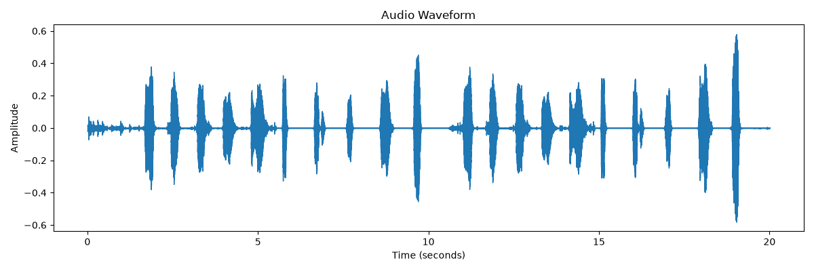
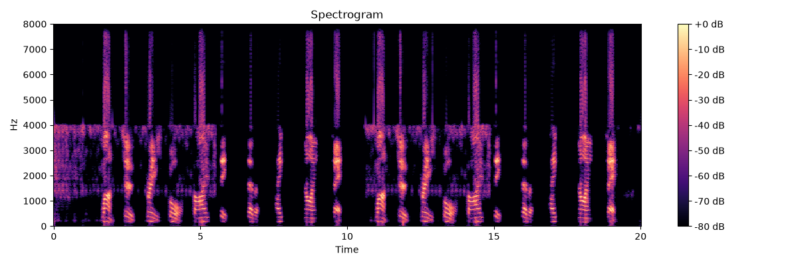
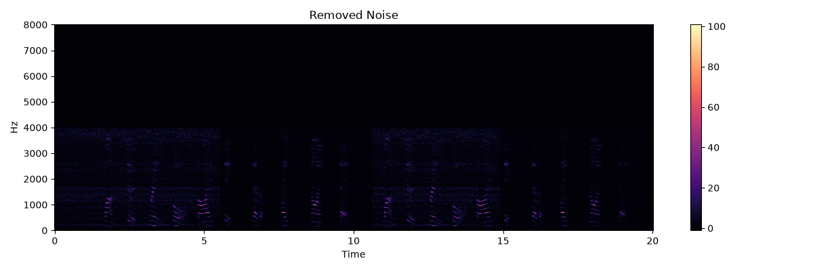

Audio Restoration Report
Metrics
Transcript
AI Analysis



def create_html_report(
transcript,
metrics
):
html = f"""
Audio Restoration Dashboard
Metrics
- Duration: {metrics['duration']} sec
- Original RMS: {metrics['original_rms']}
- Cleaned RMS: {metrics['cleaned_rms']}
- Noise Reduction: {metrics['noise_reduction_percent']}%
Transcript
{transcript}
Waveform
Spectrogram
Removed Components
"""
with open(
"outputs/report.html",
"w",
encoding="utf-8"
) as f:
f.write(html)